このダッシュボードは、Sentinel-1衛星のSARレーダー波形をリアルタイムに解析し、タンクの液面変化を監視する実験的なプロジェクトです。以下のチャートとAIレポートは、最新の観測データとGoogle検索からの情報を組み合わせて生成されたものです。
OSSプロジェクトのGitHubリポジトリ: https://github.com/rohiniku/s1-tank-monitor
※本レポートは、宇宙からのレーダー波形を自律的に読み解いたAIが、今朝のGoogle検索ニュースとリアルタイムに結合して自動生成した実験用ファクトチェック報告です。
・志布志基地のVV偏波は、2026年4月以降、過去の平均ベースライン（約0.0〜0.5 dB）を大幅に上回り、直近では2.1〜2.7 dBで推移している。これはタンク屋根の継続的な上昇を示し、在庫量が満タン方向へ著しく増加している物理的変化である。 ・志布志基地におけるVV偏波の持続的な高値トレンドは、過去に例のない在庫増加を示唆しており、今後の動向を継続的に監視する必要がある。特に、この高偏波状態が維持されるか、さらに上昇するかに最大の警戒を払うべきである。
・志布志基地のVV偏波は2026年4月中旬から顕著に上昇し、5月下旬と9月中旬にピークを記録、在庫が大幅に増加したことを示唆する。これは過去に例のない持続的な備蓄量の増加トレンドである。 ・2026年3月下旬と5月上旬に志布志を含む国家備蓄原油の放出が報じられたが、SARデータは同時期に志布志で在庫が急増しており、報道と物理データが矛盾する。放出を上回る規模の原油入港・積増しが同時進行した可能性が高い。 ・報道された放出期間中に志布志で備蓄が増加した事実は、国家備蓄の運用実態が公表情報と異なる可能性を示唆する。今後の備蓄動向、特に中東情勢の緊迫化が続く中での在庫変動に最大限の警戒が必要である。
・志布志基地のVV/VH偏波は2026年4月以降、過去平均を大幅に上回る水準で持続的に上昇。これは原油在庫が異常に増加し、貯蔵能力が逼迫している可能性を示唆する。他の主要基地は季節性ノイズからの回復や安定傾向にあり、全体として安全水域を維持している。 ・米・イラン紛争で中東情勢は極度に緊迫し、2月下旬からホルムズ海峡が事実上封鎖。代替ルートの紅海もフーシ派攻撃で危険化し海上物流が逼迫。原油価格高騰で日本のエネルギー需給脆弱性が顕在化する中、志布志の異常な在庫増加は、供給途絶リスクへの備蓄強化か、物流停滞による原油滞留を示唆し、報道と物理的状況に乖離が見られる。 ・ホルムズ海峡封鎖と紅海ルートの不安定化が続く中、志布志基地の異常な在庫増加が戦略的備蓄か物流停滞かを早急に特定すべき。代替パイプライン攻撃や中国の燃料輸出停止など多重リスクが顕在化しており、備蓄維持と供給経路確保が喫緊の課題。
📊 最新の幾何アライメント済・移動平均観測チャート
（※画像上でダブルタップまたはピンチアウトすることで、ブラウザ標準の滑らかなズーム操作が可能です）
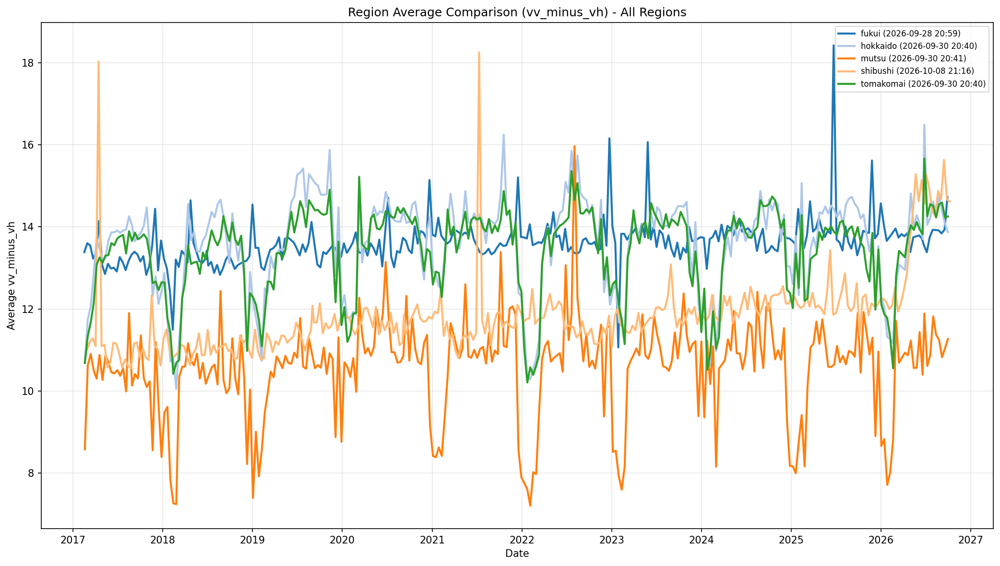
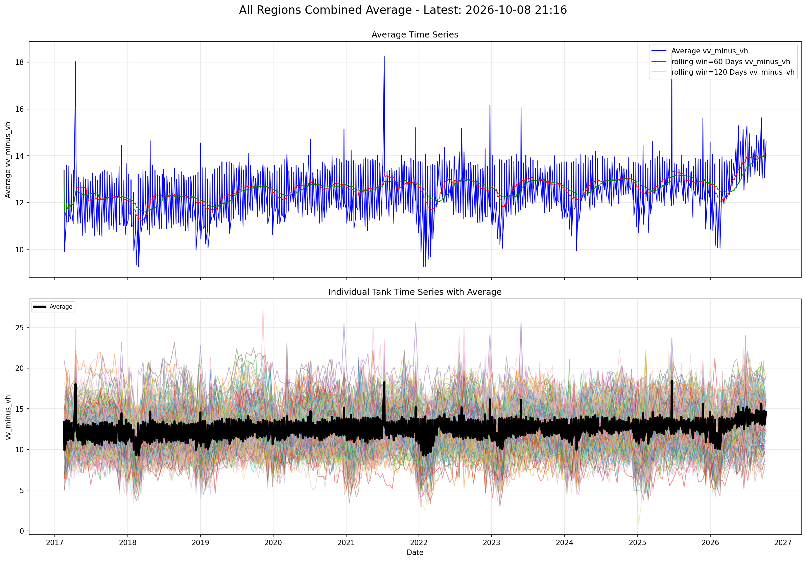
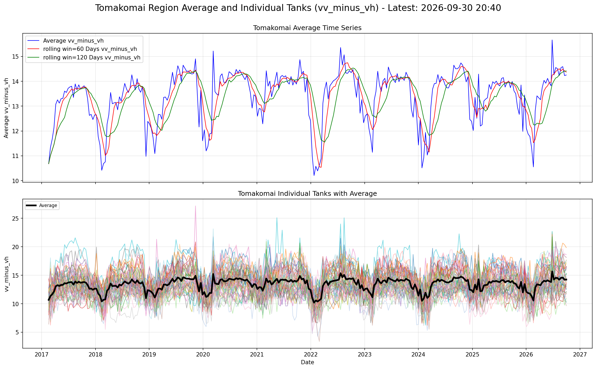
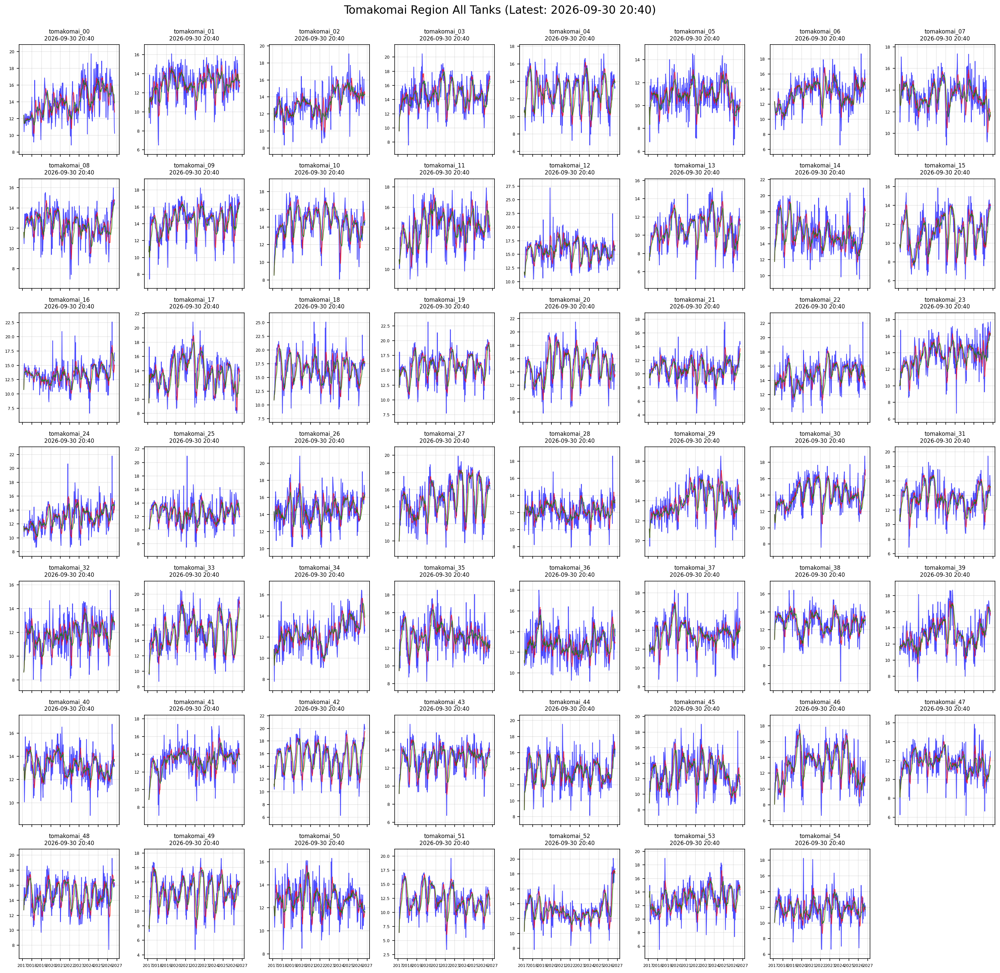
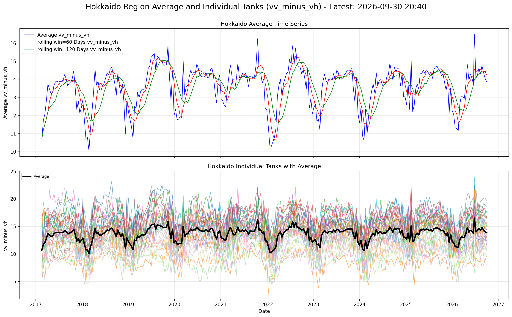
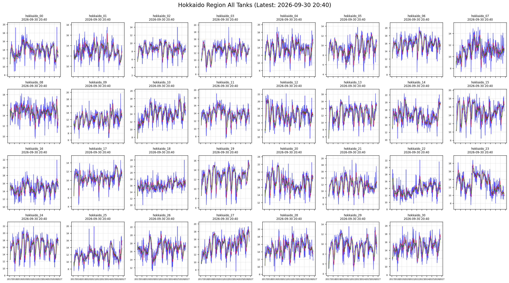
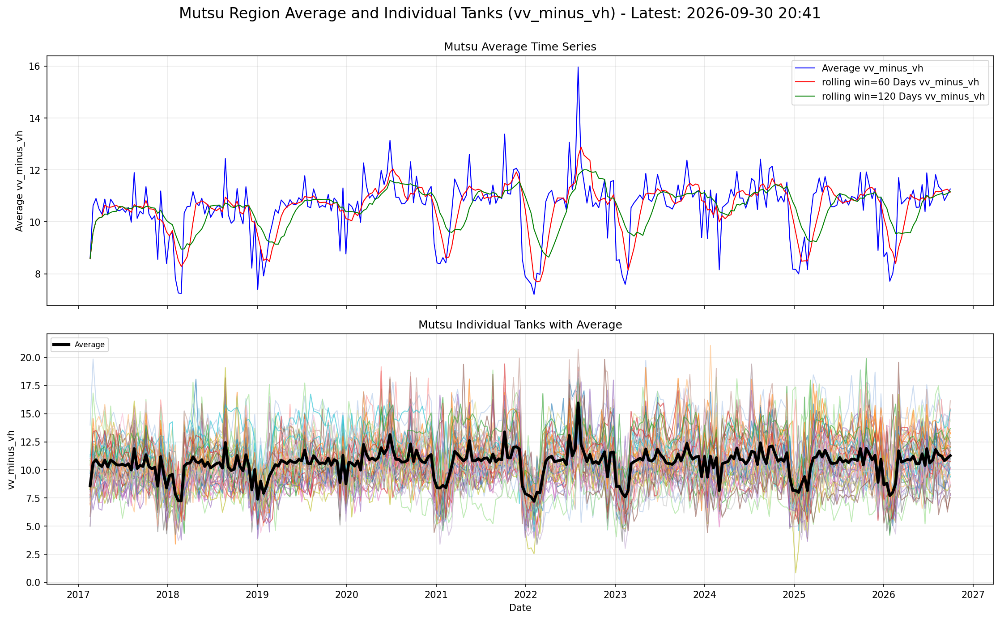
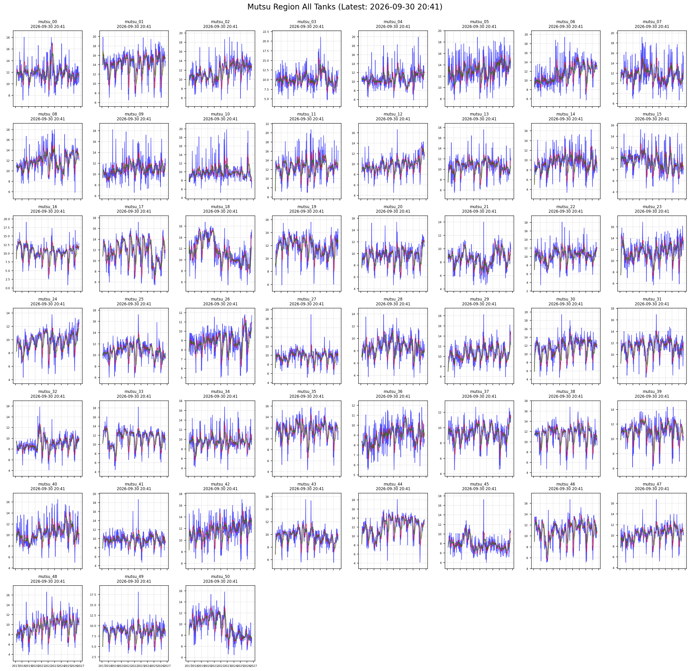
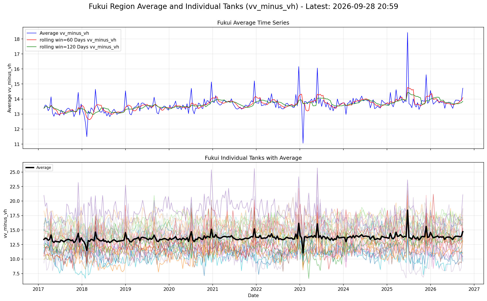
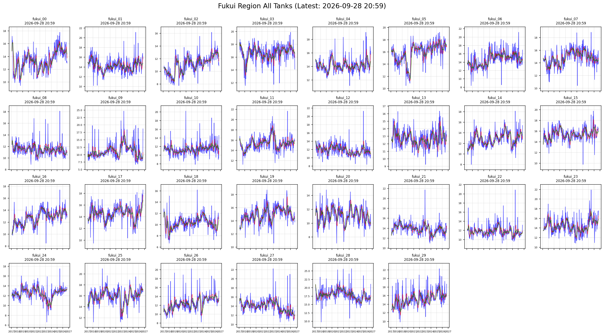
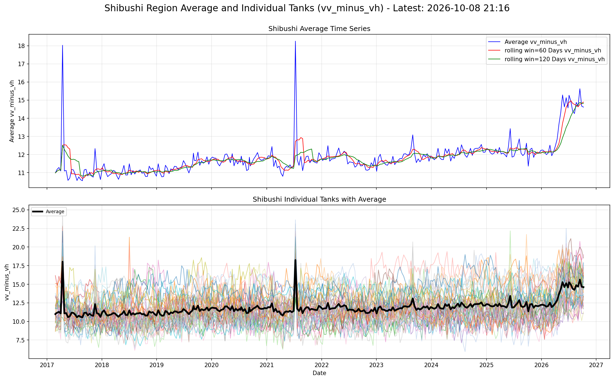
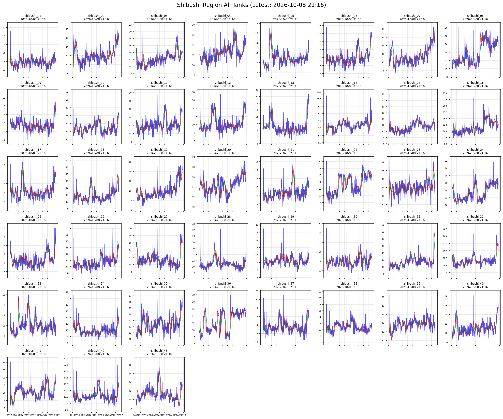